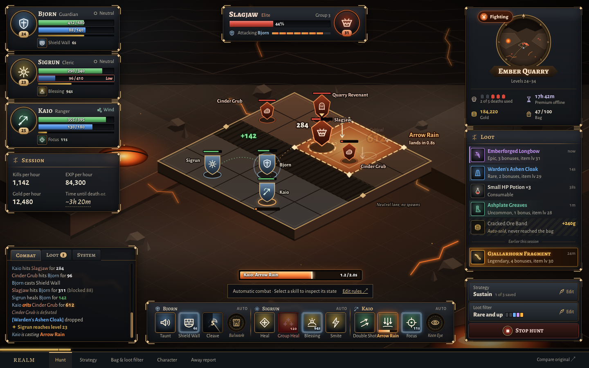
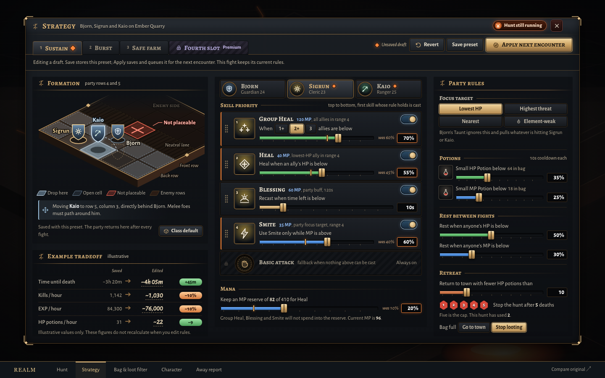
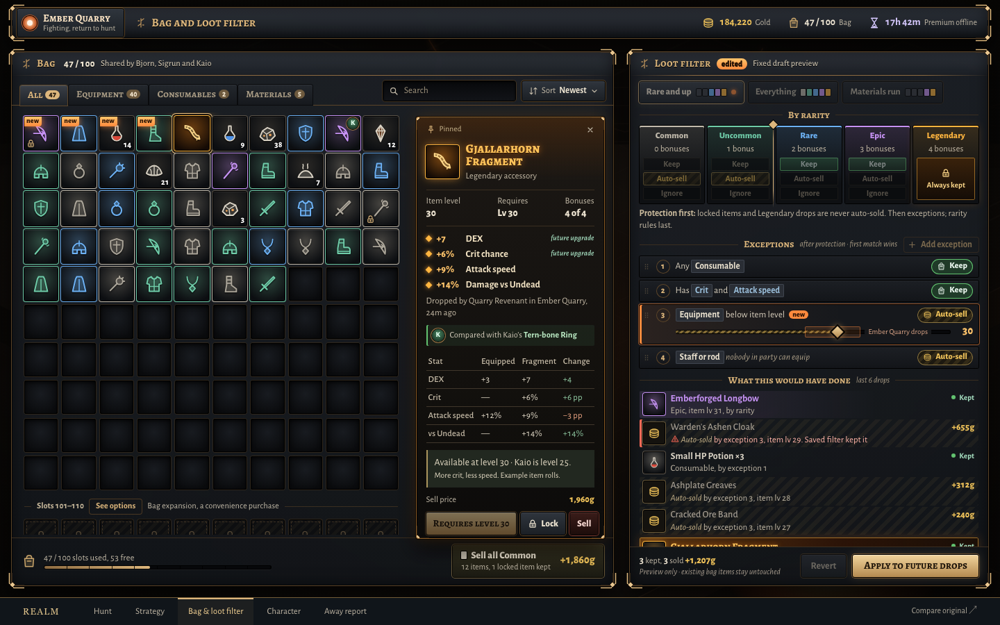
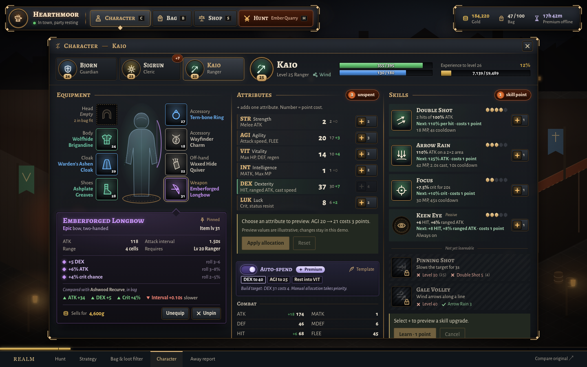
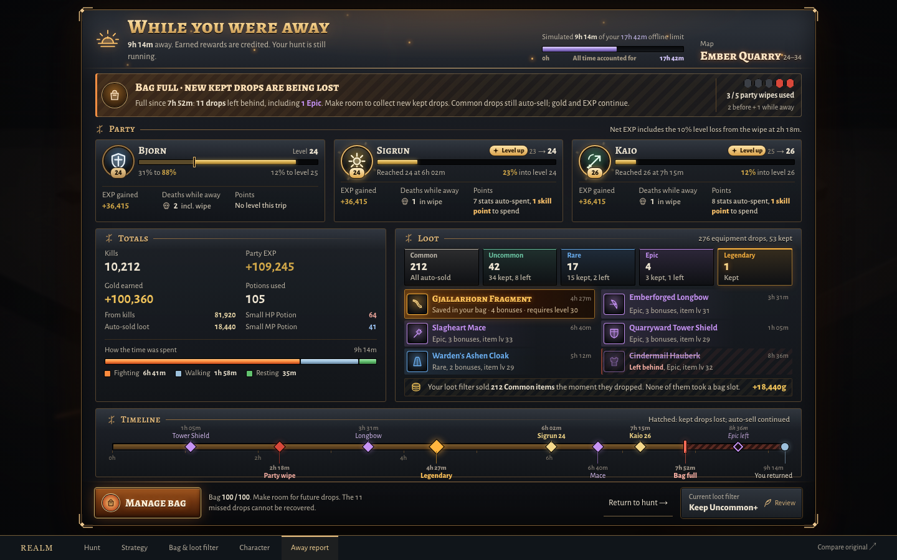

A world worth watching.
Decisions worth making.
The same iron, bronze and ember. Clearer skill activity, deliberate strategy changes, useful equipment comparisons, and a return report that helps you choose what comes next.

Hunt
Watch your party at work. Inspect what a skill is doing and understand when it is waiting.

Strategy
Refine priorities, see the tradeoffs, and choose when the running hunt receives your changes.

Bag & loot filter
Know what you can equip and exactly why an item is kept or sold.

Character
Preview the cost and result of an attribute change before you commit your points.

While you were away
Celebrate what happened, understand what went wrong, and make room for the next discovery.
Desktop design prototype. The away report shows a later expedition snapshot.
Selected interactions are local demonstrations; no game account is changed.
All original mockups are preserved.
Design notes and interaction guide →